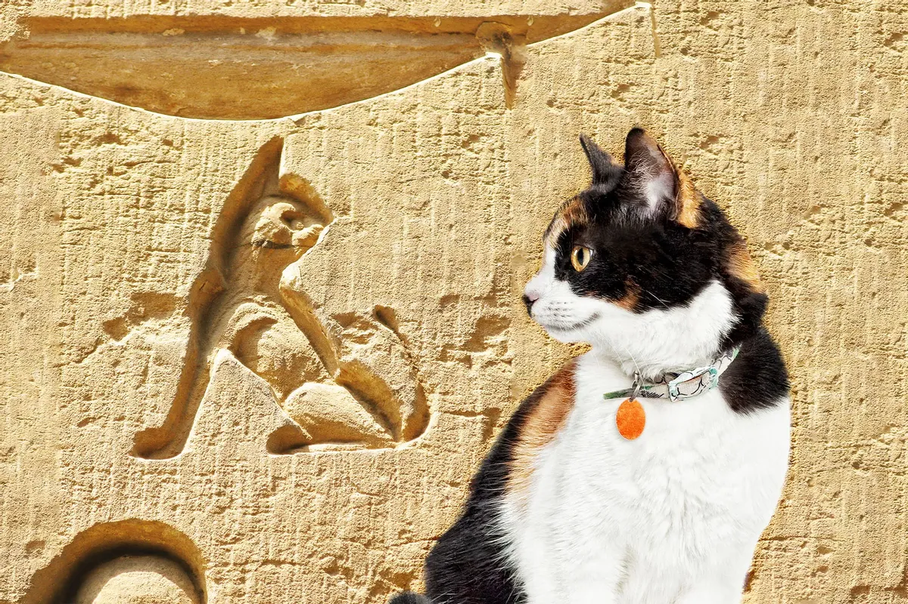

Cats have a long and fascinating history. They were first domesticated in ancient Egypt
around 4,000 years ago, where they were highly revered and worshipped as sacred animals.
These early cats were valued for their ability to hunt and control vermin, protecting the
precious grain stores of the Egyptians.
Over time, cats spread to other parts of the world through trade and exploration. They played important roles in various cultures and religions, such as the Norse goddess Freyja, who had a chariot pulled by two large cats. Cats were also associated with good fortune and were often kept as cherished companions.
During the Middle Ages in Europe, cats faced persecution due to their association with witchcraft and superstitions. Thousands of cats were killed during the infamous witch hunts. However, they eventually regained their popularity and became beloved pets once again.
Today, cats are one of the most popular pets worldwide, known for their independent and mysterious nature. They continue to captivate people's hearts with their charm and playful personalities. Explore the fascinating history of cats and learn more about these incredible creatures!
Over time, cats spread to other parts of the world through trade and exploration. They played important roles in various cultures and religions, such as the Norse goddess Freyja, who had a chariot pulled by two large cats. Cats were also associated with good fortune and were often kept as cherished companions.
During the Middle Ages in Europe, cats faced persecution due to their association with witchcraft and superstitions. Thousands of cats were killed during the infamous witch hunts. However, they eventually regained their popularity and became beloved pets once again.
Today, cats are one of the most popular pets worldwide, known for their independent and mysterious nature. They continue to captivate people's hearts with their charm and playful personalities. Explore the fascinating history of cats and learn more about these incredible creatures!